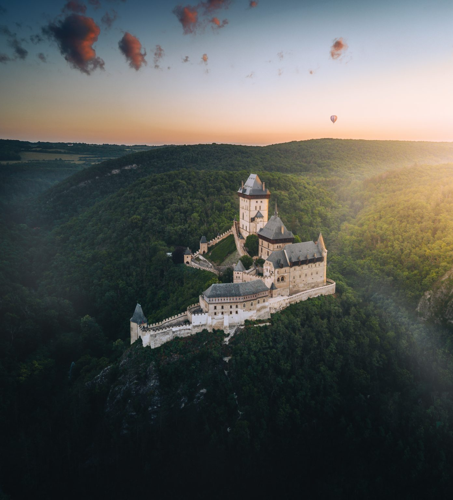
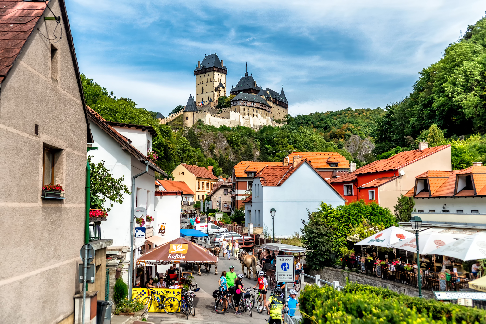
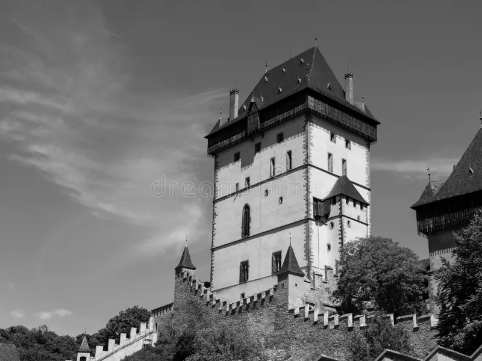
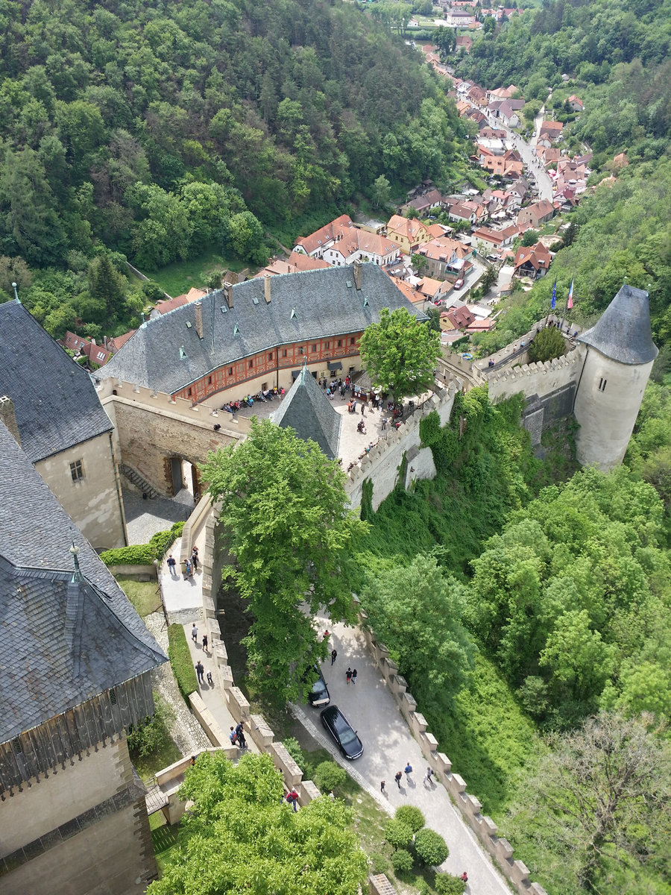

A famous medieval castle near Prague, built by Charles IV and surrounded by forests and hills in Central Bohemia.
Karlštejn is one of the best-known castles in Czechia. It was foounded by Charles IV in the 14th century and originally served as an important place for keeping royal treasures and relics.
The castle stands on a hill above the village of Karlštejn and is surrounded by forests and countryside. Its towers and walls create a distinctive silhouette visible from the surrounding area.

The Great Tower is the most important and impressive part of Karlštejn Castle. It contains the famous Chapel of the Holy Cross, which was designed to protect important royal treasures and relics.
The tower stands at the highest point of the castle complex and offers a strong impressions of the castle's medieval defensive character.

The castle complex includes several courtyards, historic buildings and defensive walls. Walking through the courtyards gives visitors an idea of how the castle was organized during the Middle Ages.
The surrounding paths also offer views of the village, forests and hills around Karlštejn.

Karlštejn offers more than just the castle itself. Visitors can explore the historic village, walk through the surrounding countryside and discover viewpoints along the nearby trails.
The combination of medieval architecture, forests and rolling Central Bohemian landscapes makes Karlštejn an interesting destination for a day trip.